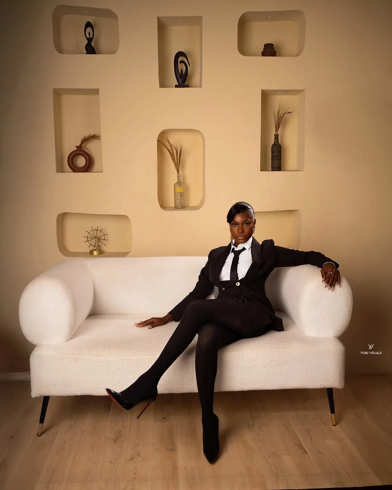
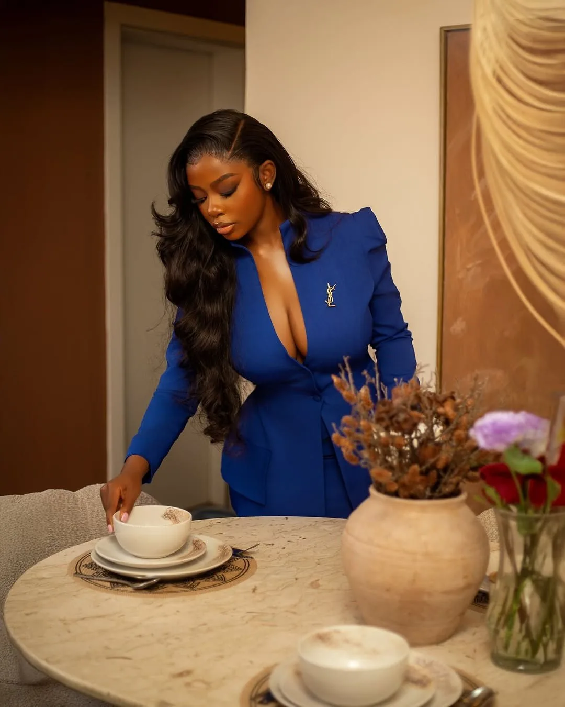
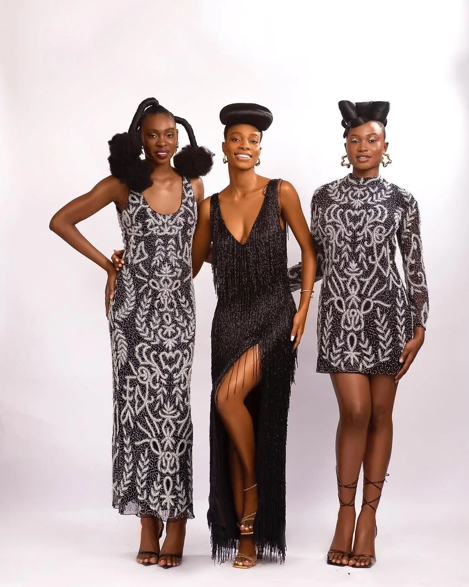
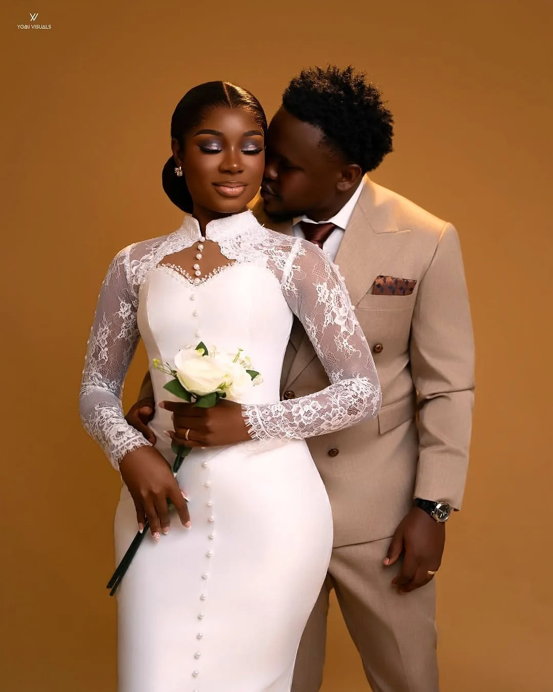

Portraits & editorial
Personal, studio, lifestyle and editorial photography with a distinct visual point of view.
ENQUIRE ↗
Yomi Visuals creates intentional photographs and striking campaigns where bold creative direction meets visual storytelling.
Portraiture, commercial imagery, weddings, lifestyle and studio experiences.
From the first idea to the final visual, we shape work around your story. Availability, deliverables and project rates are confirmed individually.
Personal, studio, lifestyle and editorial photography with a distinct visual point of view.
ENQUIRE ↗Campaign imagery, creative direction and brand-led visual stories for digital and print.
ENQUIRE ↗Wedding coverage and considered storytelling for personal milestones and celebrations.
ENQUIRE ↗Concept development and styled shoots, with studio enquiries handled through our studio team.
STUDIO DETAILS ↗A closer look at the kinds of visual work we create. These are portfolio themes, not claims about named clients or unverified campaign results.

Expression, styling and composition come together to give every portrait its own atmosphere.
EXPLORE PORTRAITS ↗
Visual consistency, product presence and editorial storytelling in a commercial context.
EXPLORE BRANDS ↗
Emotion, atmosphere and the quieter details that bring an occasion back to life.
EXPLORE WEDDINGS ↗STRATEGY × CRAFT × EXPERIENCE
Have a project in mind? Tell us a little about it, and open a ready-to-send WhatsApp enquiry. You can also reach out directly or explore studio availability.